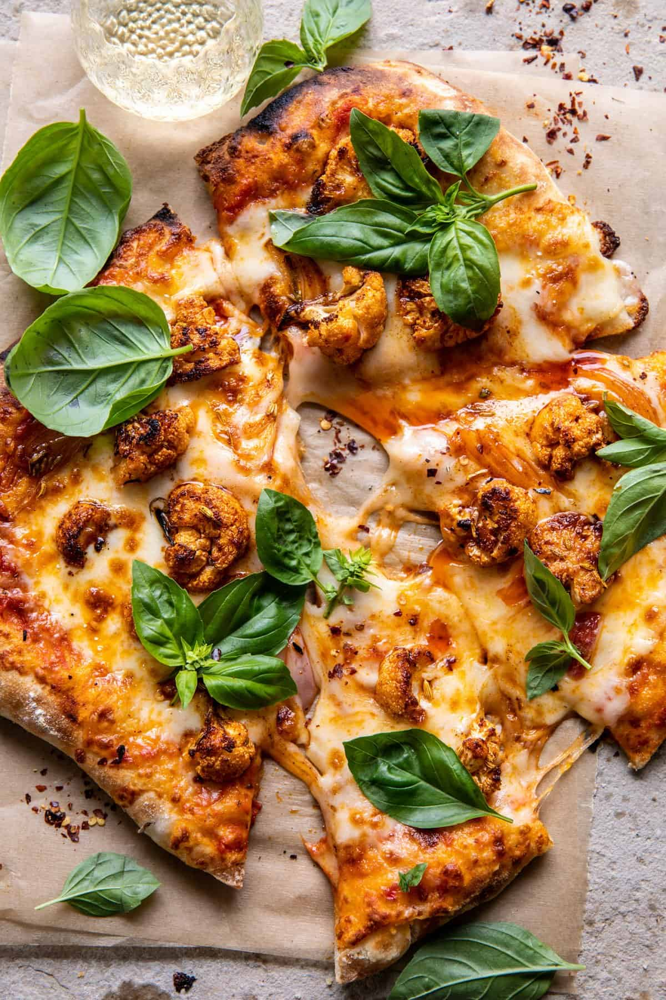

Cheese and papperoni Pizza

Ingredients
- one 12-inch boboli pizza crust 3 ounces pepperoni
- thinly sliced 1/2 pound button mushrooms
- wiped or brushed clean thinly sliced 2 plum tomatoes
- cored and thinly sliced 12 peperoncini
- thickly sliced 2 cups (8 ounces) coarsely shredded whole-milk or part-skim
- low-moisture mozzarella cheese
Procedure
-
STEP 1
Position an oven rack in the center of the oven and place a baking stone, if using one, on the rack. Preheat the oven to 500°F. Remove the Boboli from the plastic bag and set aside the packet of tomato sauce. Place the pizza crust on a pizza screen, pizza pan, or rim- less baking sheet, or on a pizza peel ready to slide directly onto the baking stone.To top the pizza: Spread the pizza sauce over the crust, leaving a 1-inch border. Arrange the pepperoni in a single layer over the sauce. Scatter the mushrooms over the top. Arrange the tomatoes in a single layer over the mushrooms. Scatter the peperoncini over the top. -
STEP 2
Distributethe cheese evenly over the vegetables, leaving a 1-inch border. Place the pizza in the oven on the rack or stone. (Work quickly to slide the pizza into the oven and close the door so the oven temperature doesn’t drop too much.) Bake the pizza until the crust is crisp and a deep golden brown and the cheese is golden, 10 to 12 minutes. Slice the pizza into wedges and serve immediately